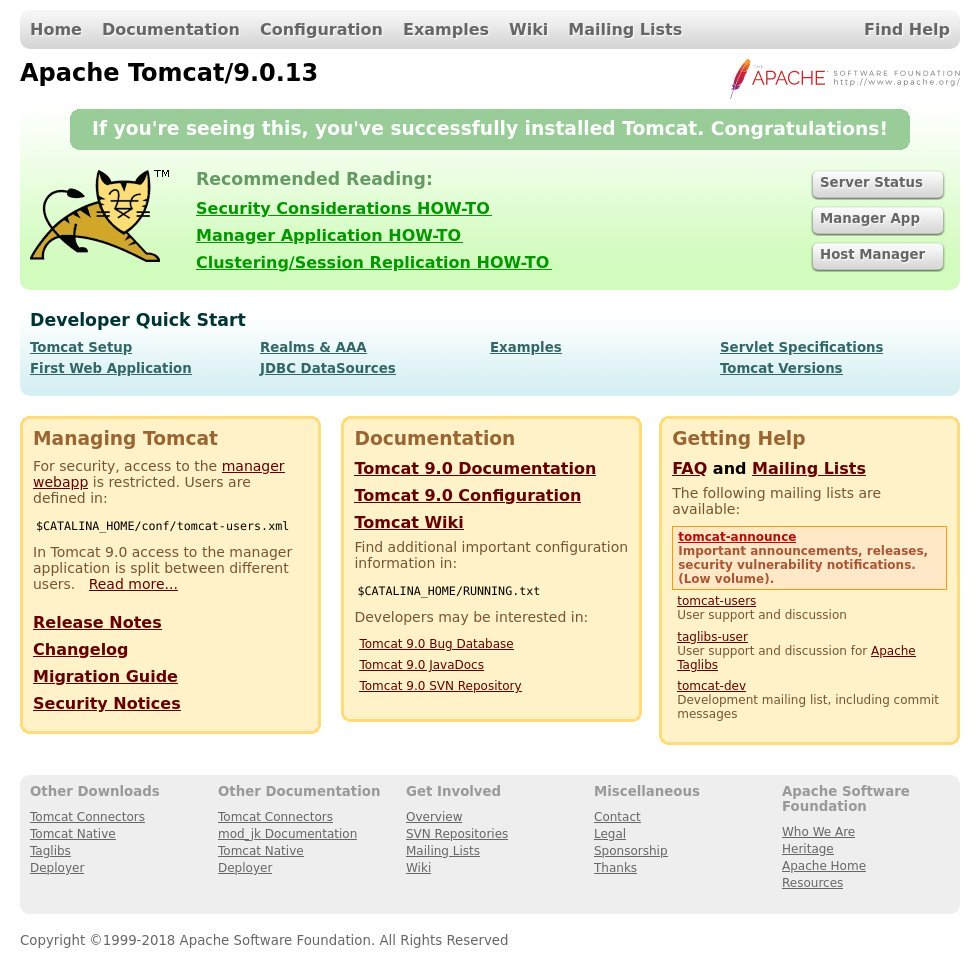
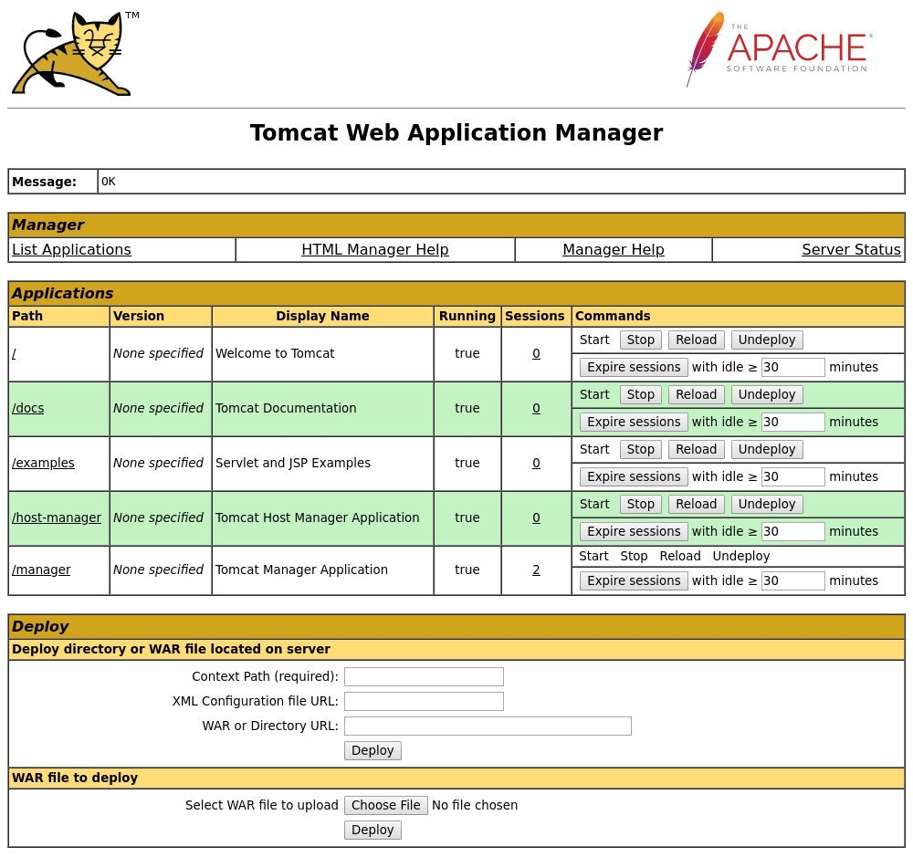
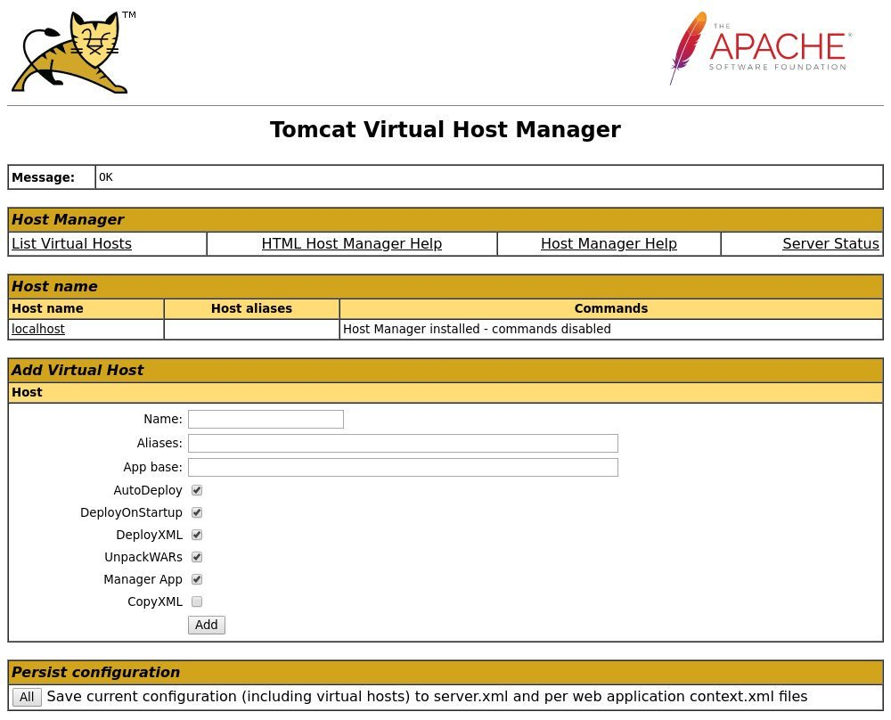

CentOS 8 上 Tomcat 9 安装教程
Apache Tomcat 是 Java Servlet ， JavaServer Pages ， Java Expression Language 和 Java WebSocket 技术的开源实现。它是当今世界上使用最广泛的应用程序和 Web 服务器之一。 Tomcat 使用简单，并且具有强大的附加组件生态系统。
本教程说明了如何在 CentOS 8 上安装 Tomcat 9.0 。
安装 Java
Tomcat 9 需要 Java SE 8 或更高版本。我们将安装 OpenJDK 11(Java 平台的开源实现)。
以超级用户 root 或具有 sudo 特权的用户身份运行以下命令来安装 Java ：
sudo dnf install java-11-openjdk-devel
安装完成后，通过检查 Java 版本进行验证：
java -version
输出应如下所示：
openjdk version "11.0.5" 2019-10-15 LTS
OpenJDK Runtime Environment 18.9 (build 11.0.5+10-LTS)
OpenJDK 64-Bit Server VM 18.9 (build 11.0.5+10-LTS, mixed mode, sharing)
创建系统用户
在 root 用户下运行 Tomcat 存在安全风险。我们将使用主目录 /opt/tomcat 创建一个新的系统用户和组，该用户和组将运行 Tomcat 服务。为此，请输入以下命令：
sudo useradd -m -U -d /opt/tomcat -s /bin/false tomcat
下载 Tomcat
可从 Tomcat 下载页面下载 Tomcat 二进制分发版。
在撰写本文时，最新的 Tomcat 版本是 9.0.30 。在继续下一步之前，请检查 Tomcat 9 下载页面以查看是否有较新版本。
将 Tomcat zip 文件下载 wget 到以下 /tmp 目录：
VERSION=9.0.30
wget https://www-eu.apache.org/dist/tomcat/tomcat-9/v${VERSION}/bin/apache-tomcat-${VERSION}.tar.gz -P /tmp
下载完成后，将 tar 文件解压缩到 /opt/tomcat 目录：:
sudo tar -xf /tmp/apache-tomcat-${VERSION}.tar.gz -C /opt/tomcat/
Tomcat 会定期进行更新。为了更好地控制版本和更新，我们将创建一个名为 latest 的符号链接，该链接指向 Tomcat 安装目录：
sudo ln -s /opt/tomcat/apache-tomcat-${VERSION} /opt/tomcat/latest
先前创建的系统用户必须有权访问 tomcat 安装目录。将目录所有权更改为 tomcat 用户和组：
sudo chown -R tomcat: /opt/tomcat
使 bin 目录内的 shell 脚本可执行：
sudo sh -c 'chmod +x /opt/tomcat/latest/bin/*.sh'
这些脚本用于启动和停止 Tomcat 。
创建系统单位文件
与其手动启动和停止 Tomcat 服务器，不如将其设置为作为服务运行。打开文本编辑器并在 /etc/systemd/system/ 目录中创建一个单位文件 tomcat.service ：
sudo nano /etc/systemd/system/tomcat.service
粘贴以下内容到文件 /etc/systemd/system/tomcat.service ：
[Unit]
Description=Tomcat 9 servlet container
After=network.target
[Service]
Type=forking
User=tomcat
Group=tomcat
Environment="JAVA_HOME=/usr/lib/jvm/jre"
Environment="JAVA_OPTS=-Djava.security.egd=file:///dev/urandom"
Environment="CATALINA_BASE=/opt/tomcat/latest"
Environment="CATALINA_HOME=/opt/tomcat/latest"
Environment="CATALINA_PID=/opt/tomcat/latest/temp/tomcat.pid"
Environment="CATALINA_OPTS=-Xms512M -Xmx1024M -server -XX:+UseParallelGC"
ExecStart=/opt/tomcat/latest/bin/startup.sh
ExecStop=/opt/tomcat/latest/bin/shutdown.sh
[Install]
WantedBy=multi-user.target
保存并关闭文件。
通过输入下面的命令，通知 systemd 一个新的服务文件存在：
sudo systemctl daemon-reload
启用随机启动并启动 Tomcat 服务：
sudo systemctl enable --now tomcat
检查服务状态：
sudo systemctl status tomcat
输出应显示 Tomcat 服务器已启用并正在运行：
● tomcat.service - Tomcat 9 servlet container
Loaded: loaded (/etc/systemd/system/tomcat.service; enabled; vendor preset: disabled)
Active: active (running) since Wed 2020-01-15 20:38:07 UTC; 30s ago
Process: 3957 ExecStart=/opt/tomcat/latest/bin/startup.sh (code=exited, status=0/SUCCESS)
...
配置防火墙
如果您的服务器受防火墙保护，并且您想从本地网络的外部访问 tomcat 接口，则需要打开端口 8080 。
使用以下命令打开必要的端口：
sudo firewall-cmd --permanent --zone=public --add-port=8080/tcp
通常，在生产环境中运行 Tomcat 时，应使用负载平衡器或反向代理。最佳做法是 8080 仅允许访问内部网络的端口。
配置 Tomcat Web 管理界面
现在，您应该能够在 Web 浏览器上使用 8080 端口上的访问 Tomcat 。由于我们尚未创建用户，因此无法访问 Web 管理界面。
Tomcat 用户和角色在 tomcat-users.xml 文件中定义。
如果打开文件，您会注意到其中充满了注释和描述如何配置文件的示例。
sudo nano /opt/tomcat/latest/conf/tomcat-users.xml
Tomcat 用户是在 tomcat-users.xml 文件中定义的用户。要创建可以访问 tomcat Web 界面 (manager-gui 和 admin-gui) 的新用户，请编辑文件，如下所示。确保将用户名和密码更改为更安全的名称：
/opt/tomcat/latest/conf/tomcat-users.xml
<tomcat-users>
<!--
Comments
-->
<role rolename="admin-gui"/>
<role rolename="manager-gui"/>
<user username="admin" password="admin_password" roles="admin-gui,manager-gui"/>
</tomcat-users>
默认情况下， Tomcat Web 管理界面配置为仅允许从本地主机访问。
如果您需要从任何地方访问 Web 界面，请打开以下文件并注释或删除以黄色突出显示的行：
/opt/tomcat/latest/webapps/manager/META-INF/context.xml
<Context antiResourceLocking="false" privileged="true" >
<!--
<Valve className="org.apache.catalina.valves.RemoteAddrValve"
allow="127\.\d+\.\d+\.\d+|::1|0:0:0:0:0:0:0:1" />
-->
</Context>
/opt/tomcat/latest/webapps/host-manager/META-INF/context.xml
<Context antiResourceLocking="false" privileged="true" >
<!--
<Valve className="org.apache.catalina.valves.RemoteAddrValve"
allow="127\.\d+\.\d+\.\d+|::1|0:0:0:0:0:0:0:1" />
-->
</Context>
请注意，不建议允许从任何地方访问，因为这存在安全风险。
如果您只想从特定 IP 访问 Web 界面，而不是注释这些块，则将您的公共 IP 添加到列表中。
假设您的公共 IP 是， 41.41.41.41 并且您只想允许从该 IP 访问：
/opt/tomcat/latest/webapps/manager/META-INF/context.xml
<Context antiResourceLocking="false" privileged="true" >
<Valve className="org.apache.catalina.valves.RemoteAddrValve"
allow="127\.\d+\.\d+\.\d+|::1|0:0:0:0:0:0:0:1|41.41.41.41" />
</Context>
/opt/tomcat/latest/webapps/host-manager/META-INF/context.xml
<Context antiResourceLocking="false" privileged="true" >
<Valve className="org.apache.catalina.valves.RemoteAddrValve"
allow="127\.\d+\.\d+\.\d+|::1|0:0:0:0:0:0:0:1|41.41.41.41" />
</Context>
允许的 IP 地址列表是用竖线 | 分隔的列表 。您可以添加单个 IP 地址或使用正则表达式。
完成后，重新启动 Tomcat 服务以使更改生效：
sudo systemctl restart tomcat
测试安装
打开浏览器并输入： http://<your_domain_or_IP_address>:8080
成功安装后，将显示类似于以下内容的屏幕：

Tomcat Web 应用程序管理器仪表板允许您部署，取消部署，启动，停止和重新加载应用程序。可在以下网址获得： http://<your_domain_or_IP_address>:8080/manager/html 。

Tomcat 虚拟主机管理器仪表板允许您创建，删除和管理 Tomcat 虚拟主机。可在以下网址获得： http://<your_domain_or_IP_address>:8080/host-manager/html 。

结论
我们已经向您展示了如何在 CentOS 8 上安装 Tomcat 9.0 以及如何访问 Tomcat 管理界面。
有关 Apache Tomcat 的更多信息，请访问官方文档页面。